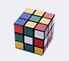
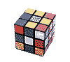
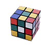
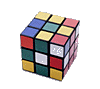

Графические форматы: GIF и JPEG. Работа с форматами в Adobe Photoshop. Немного теории. Откроем замечательный Web-редактор «Блокнот» :)
На предыдущем занятии мы с вами создали замечательную текстовую страничку. Но вам не кажется, что выглядит все это скучновато? Может быть, это и была бы замечательная страничка, но лет эдак 5 назад, когда еще не было графических броузеров, да и люди ходили в Сеть намного реже... Учитывая, что сейчас почти все блуждают по Internet с помощью компьютеров, оснащенных операционными системами с графическим интерфейсом, и соответственно пользуются графическими броузерами, стоит оснастить свою Web-страничку картинкой.
Главное, что надо запомнить, – в Internet особенную важность приобретают не художественные достоинства картинки, а скорость загрузки. Никто, кроме вас, не станет ждать 5 мин, пока появится ваш шедевр, и пойдет дальше. Так что главное достоинство картинок для Сети — минимальный размер.
Для размещения изображений в WWW в данное время используются два графических формата — GIF и JPEG. Остальные типы графических файлов WWW-броузеры без применения специальных дополнительных программ (plug-in) не поддерживают.
Основное различие между форматами GIF и JPEG состоит в том, что применяются они для хранения разных видов графики. GIF преимущественно используется для сохранения рисованных изображений, векторной графики, картинок без полутонов, градиентов (переходов от цвета к цвету) и большого количества мелких деталей разного цвета, тогда как JPEG — для фотоизображений и полутоновой графики, живописи, градиентов и изображений с множеством мелких разноцветных деталей.
Причина подобной несправедливости кроется в том, что формат GIF позволяет сохранять изображение, содержащее не более 256 цветов. Цвета могут быть любыми и в любой комбинации, но общее их количество ограничено этой цифрой. Поэтому в данном формате удобно хранить изображения с небольшим количеством цветов (меньше 256), т. к. это позволяет за счет сокращения объема информации о цветах значительно уменьшить размер файла, а следовательно, и время загрузки. Помимо того, формат GIF используется для сохранения анимированных картинок и изображений с прозрачными частями — в JPEG такие возможности просто не заложены.
Область же применения формата JPEG определяется тем, что он сохраняет полную цветовую палитру 24-битного изображения (True Color), которая может содержать миллионы цветов. При таком объеме информации размер файла получается очень большим, но главной особенностью формата JPEG является его способность хранить изображение в сжатом, как бы заархивированном виде. Степень архивации изображения, сохраненного в формате JPEG, может быть очень большой: нормальным считается сжатие картинки в 10–20 раз без видимой потери качества.
Приступим?..
При размещении изображения в WWW необходимо помнить о том, что просматривать его будут разные люди и компьютеры у них будут разные. Наверняка попадутся и такие, у которых разрешение монитора будет 640х480 точек (пикселов). Так что есть смысл ограничить размер картинки до максимальной ширины в 600 и длины в 400 точек. Тем более что такая картинка будет весьма немаленькой по размеру файла и соответственно времени загрузки. Размер картинки вы можете узнать, открыв ее в Adobe Photoshop (именно эту программу мы предлагаем вам использовать для работы с изображениями) и щелкнув мышкой при нажатой клавише ALT по участку статусной строки слева от черного треугольника. Изменить размеры изображения в Photoshop можно с помощью команды Image Size в меню Image. Не забудьте установить флажок в окошко Resample Image, иначе у вас ничего не получится : )
После изменения размеров изображение обычно несколько теряет резкость, и приходится ее восстанавливать. Сделать это можно при помощи фильтра Unsharp Mask в разделе Sharpen, меню Filter:
Поработайте с этим фильтром, установив галочку в окошко Preview. Когда резкость изображения будет вас устраивать — нажмите ОК.
Итак, мы разобрались с изменением размеров и корректировкой резкости изображения. Пришло время сохранять картинку. Вариантов сохранения всего два — GIF и JPEG; осталось только выбрать, какой больше подходит для вашей картинки. Рассмотрим на примере несколько изображений и варианты их сохранения для публикации в WWW.
Полутоновые изображения (фотографии)
Для фотоизображений характерно большое количество цветов и полутонов, поэтому для них оптимально использование формата JPEG.
При сохранении изображения необходимо отключить опцию Save Thumbnail в меню Save, т. к. это увеличивает размер файла. Сделать это раз и навсегда можно в диалоговом окне Saving Files, которое находится в разделе Preferences, меню File, установив в выпадающем списке Image Preview опцию Never Save.
При сохранении файла используйте имя, состоящее не более чем из восьми латинских символов без заглавных букв и пробелов. Расширение файла также должно быть набрано строчными буквами — например, «photo1.jpg».
После того как вы наберете имя файла и расширение и щелкнете кнопку Save, вам будет предложено выбрать степень сжатия изображения и тип файла JPEG:
Степень сжатия указывается в разделе Image Options с помощью выпадающего списка и движка Quality. Для большинства изображений опция Medium (3) представляет оптимальное соотношение между качеством и размером файла. Не бойтесь экспериментировать: иногда может понадобиться меньшая степень сжатия, а иногда большая. Сохраните несколько вариантов файла с разной компрессией и просмотрите их в броузере. Это позволит вам выбрать для данного изображения наилучшее соотношение качество / размер файла.
Для оптимизации цветового баланса вашего изображения выберите в нижней части диалогового окна, в разделе Format Options, переключатель Baseline Optimized. Вы можете также использовать новый формат Progressive JPEG, выбрав переключатель Progressive и параметр Scans.
Изображение, сохраненное в формате Progressive JPEG, при загрузке странички в броузер отображается сначала в низком разрешении, а затем постепенно, по мере загрузки, прорисовываясь окончательно со всеми деталями. Этот формат обладает рядом существенных недостатков: его не поддерживают старые броузеры, файл получается несколько более объемным, и для просмотра требуется большее количество оперативной памяти.
Рисунки, иллюстрации, фотографии
с небольшим количеством цветов
Для публикации подобных изображений в WWW больше подходит формат GIF, т. к. если иллюстрация содержит не слишком много цветов, то, используя возможности этого формата и сохраняя ее в режиме Indexed color, с неполной цветовой палитрой, мы можем получить значительно меньший объем файла, чем при сохранении иллюстрации в формате JPEG. Давайте подробно рассмотрим процедуру сохранения иллюстрации в формате GIF с одновременным уменьшением цветовой палитры изображения и размера файла.
Для сохранения файла в формате GIF в пакете Adobe Photoshop существует специальный модуль GIF89a Export, находящийся в разделе Export, меню File. Использование этого модуля позволяет визуально подобрать наилучшее соотношение между качеством картинки и размером файла, не выходя из диалогового окна Export. Модуль экспорта GIF89a Export также позволяет сохранять изображения с прозрачными элементами.
Для этого откройте файл в Photoshop и убедитесь, что изображение находится в режиме RGB color (меню Image / Mode), его размеры вас устраивают и его разрешение составляет 72 dpi. (меню Image / Image Size). Откройте диалоговое окно GIF89a Export:
Не обращайте пока внимания на верхнюю часть окна с разделом Transparency From Mask — она понадобится нам позже, а сейчас мы будем работать в нижней части диалогового окна с параметрами Palette и Colors.
Параметр Palette управляет выбором палитры цветов, которая будет создана для данного изображения. Вы можете выбрать один из трех режимов: Exact, Adaptive и System.
В режиме Exact для создания палитры используются цвета, содержащиеся в изображении. В диалоговом окне доступ к этому режиму появляется только если картинка содержит не более 256 цветов. Exact позволяет получить оптимальное качество изображения при приемлемом размере файла.
Режим Adaptive используется в тех случаях, когда число цветов в изображении больше 256, и потому режим Exact недоступен. Для создания палитры вы указываете количество цветов, из которых следует ее сформировать. Оно может варьировать от 256 до 1. Этот параметр устанавливается в окошке Colors.
System — режим создания палитры из таблицы цветов, используемых в данный момент операционной системой компьютера. При использовании этого режима нельзя предсказать, как будет выглядеть сохраненное изображение на мониторах компьютеров, находящихся под управлением других ОС. Так что пользоваться этим вариантом сохранения не стоит.
Если вы выбрали палитру Exact, можете смело нажимать на кнопку OK и сохранять ваше изображение. Напоминаем, что при сохранении файла следует использовать имя, состоящее не более чем из восьми латинских символов без заглавных букв и пробелов. Расширение файла также должно быть набрано строчными буквами — например, «menu1.gif». Если вы сохраняете изображение с адаптивной палитрой, выберите или впечатайте в окошко Colors минимальное количество цветов, которыми можно передать все необходимые детали вашего изображения. Обратите внимание, что влияние уменьшения количества цветов в палитре на размер файла зависит от конкретной картинки, ее размеров и цветового содержимого. Для очень маленьких изображений существенное сокращение количества цветов не приведет к значительному уменьшению размеров файла.
После выбора палитры и количества цветов вы можете посмотреть, как при таких параметрах сохранения изображение будет выглядеть в Web-броузере. Для этого щелкните по кнопке Preview:
Для просмотра изображения выберите инструмент «Рука» и поводите им по изображению при нажатой кнопке мыши. Если ваше изображение слишком мало, вы можете увеличить масштаб просмотра с помощью инструмента «Лупа». Для уменьшения масштаба используйте лупу с нажатой клавишей ALT.
Если понравилось, щелкайте ОК и попробуйте еще немного уменьшить количество цветов в палитре изображения. Затем снова нажмите Preview и оцените качество картинки. Достигнув наименьшего приемлемого количества цветов, нажмите ОК и сохраните изображение.
Взгляните на несколько вариантов изображения, сохраненных с разным количеством цветов в палитре. Видно, что оптимальным вариантом сохранения является рисунок с 128-ю цветами, т. к. при наименьших отличиях от эталонного изображения он имеет вполне приемлемый размер:
| JPEG  Quality: 4 Размер файла: 7.24Kb |
||
| GIF с адаптивной палитрой | ||
|
 8 цветов Размер файла: 1.25Kb |
16 цветов Размер файла: 1.56Kb |
32 цветa Размер файла: 2.04Kb |
|
64 цветa Размер файла: 2.6Kb |
 |
 256 цветов Размер файла: 3.95Kb |
В левой нижней части окна Export находится окошко Interlaced. Оно управляет отображением сохраненного рисунка при загрузке в броузер. Если это окошко помечено галочкой, изображение будет появляться постепенно, с прорисовкой деталей по мере загрузки с сервера (как в Progressive JPEG).
Формат GIF предусматривает также такие полезные функции, как сохранение анимированных изображений и изображений, содержащих прозрачные элементы, т. е. части картинки, через которые будет видно фон Web-странички.
Анимация изображений выполняется в специализированных программах; приемы и способы создания анимационных картинок мы рассмотрим в одном из следующих занятий. А пока научимся сохранять изображения с прозрачным фоном. Для этого используется тот же модуль GIF89а Export. Но сначала изображение нужно подготовить.
Откройте в Photoshop картинку, у которой хотите убрать фон. Сначала фон необходимо сделать одноцветным. Затем подготовьте изображение к экспорту и выделению цветов, которые должны стать прозрачными. Для этого нужно перевести изображение в режим Indexed Color. Делается это в меню Image / Image Mode:
Взгляните на появившееся диалоговое окно. Все его параметры, кроме одного, вам уже знакомы. Не обращайте пока внимания на параметры списка Palette (цветовая палитра), которые вы пока не знаете. Нам понадобятся только режимы Exact и Adaptive, с которыми вы уже умеете работать. Cделать с ними нужно то же самое, что вы делали в модуле GIF89a Export, только здесь нельзя будет просмотреть получившееся изображение.
В нижней части диалогового окна Indexed Color, в разделе Options, появился новый параметр — Dither. Он управляет смешиванием цветов при создании цветовой палитры изображения. В случае, если изображение содержит полутона, в этом параметре лучше установить значение Diffusion, а если в изображении присутствуют только «чистые» цвета — установите значение None, т. е. без смешивания цветов.
После того как вы установите значения Palette и Color и нажмете ОК, изображение будет конвертировано в режим Indexed Color. Если вас не устраивает качество получившейся картинки, нажмите комбинацию клавиш CTRL и Z (команда Undo) и попробуйте еще раз с другими значениями параметра Color.
После подбора оптимального соотношения качество / размер файла откройте диалоговое окно GIF89a Export. Теперь оно имеет совсем другой вид:
Не пугайтесь, так и должно быть — ведь теперь с его помощью мы будем не ужимать цветовую палитру изображения, а выбирать цвета, которые должны стать прозрачными. Вы уже знакомы со всеми инструментами и параметрами диалогового окна, кроме «Пипетки». Все очень просто — с помощью этого инструмента вы можете выбрать в изображении те цвета, которые должны стать прозрачными. Вы можете работать или непосредственно с картинкой, или с палитрой в нижней части окна — в ней отображены все цвета, использующиеся в изображении.
Выбранные вами цвета помечаются черными квадратиками, и окрашенные ими области изображения заливаются стандартным серым цветом — при просмотре картинки в Web-броузере они станут прозрачными.
Если вы ошиблись, выбирая цвет — можете отменить выделение, щелкнув «Пипеткой» при нажатой клавише CTRL по этому цвету в окне изображения или палитре. Закончив выделение цветов, нажмите ОК и сохраните изображение. Все. Теперь можно размещать наш рисунок на страничке.
Немного теории
Для размещения картинок на Web-страницах существует специальный тег <IMG>, имеющий обязательный параметр SRC="URL" (источник=путь к файлу) и несколько необязательных. Рассмотрим этот тег поподробнее.
| <IMG SRC="logo.gif" BORDER=0 HEIGHT=120 WIDTH=160 ALIGN=LEFT HSPACE=10 VSPACE=10 ALT="Логотип"> |
SRC="URL" – путь к файлу изображения. Если файл находится на сервере в том же каталоге, что и документ, из которого к нему обращаются, то путь к нему указывать не нужно — требуется указать только имя файла (сохраняя регистр букв). Если файл изображения находится на том же сервере, но в другом каталоге, требуется указать путь к файлу от каталога, где находится документ, из которого к нему обращаются.
Пример: допустим, файл изображения logo.gif находится в каталоге PICTURES, вложенном в основной каталог сайта. Путь к нему будет выглядеть так:
| SRC="pictures/logo.gif" |
Если файл с изображением находится на другом сервере, необходимо указать полный путь к файлу:
| <IMG SRC="http://www.image.com/images/logo.gif"> |
Необязательные параметры
BORDER=pixels – параметр, указывающий, рамку какой ширины (в пикселах) следует генерировать вокруг изображения. В большинстве случаев рамка не требуется; чтобы она не отображалась, укажите значение параметра BORDER равным нулю.
HEIGHT=pixels и WIDTH=pixels – значения этих параметров указывают броузеру размеры изображения (в пикселах), чтобы при загрузке страницы броузер мог не дожидаться, пока загрузится все изображение, а оставить для него необходимое место и сначала загрузить текст страницы. Текст всегда загружается быстрее, чем графика. Настоятельно рекомендуем вам всегда указывать эти параметры.
ALIGN=TOP, MIDDLE, BOTTOM, LEFT, RIGHT. Параметр ALIGN управляет выравниванием изображения на странице. Значения LEFT и RIGHT ведают размещением картинки с выравниванием относительно левого или правого края страницы. Для размещения изображения по центру страницы используйте тег <CENTER>, например:
| <CENTER><IMG SRC="logo.gi" BORDER=0 WIDTH=100 HEIGHT=30></CENTER> |
Значения BOTTOM, LEFT, RIGHT управляют выравниванием изображения по вертикали относительно текста, стоящего перед ним.
ВОТТОМ — выравнивание текста по нижнему краю.
МIDDLE — по центру.
TOP — выравнивание по верхнему краю изображения.
При указании двух значений выравнивания значения LEFT и RIGHT выравнивают изображение относительно левого или правого края текста, а не относительно края страницы. В этом случае параметр ALIGN указывается дважды, например:
| Этот текст будет находиться слева от изображения, с выравниванием относительно его центра <IMG SRC="logo.gif" ALIGN=MIDDLE ALIGN=RIGHT BORDER=0 WIDTH=100 HEIGHT=30> |
Параметры VSPACE и HSPACE указывают количество свободного пространства (в пикселах) по вертикали и горизонтали, которое будет оставлено вокруг изображения при генерации страницы.
HSPACE — отступ слева и справа от картинки.
VSPACE — отступ сверху и снизу.
ALT — этот параметр позволяет указать текст, который будет написан на месте картинки в случае, если в броузере, через который просматривается страничка, отключена загрузка графики. Кроме того, текст, указанный в параметре ALT, будет отображаться в всплывающей подсказке, появляющейся при наведении указателя мыши на изображение.
Откроем замечательный редактор
Web-страниц "Блокнот"...
Теперь вы знаете все о размещении графических элементов на страничках и можете приступить к воплощению полученных знаний на практике. К сожалению, пока что наш сайт получается одностраничным, а это не очень хорошо. Для того чтобы объединить несколько страниц в один сайт, естественно необходимо связать их гиперссылками. Как вы знаете, это основной принцип построения WWW. Гиперссылка может быть присвоена любому элементу, расположеному на странице. Для организации гиперссылки существует специальный тег <A>. Между открывающим и закрывающим тегами может находиться текст или изображение — именно этот элемент и будет объектом, с которого производится гиперссылка.
Cинтаксис этого тега имеет много параметров, и на этом занятии мы рассмотрим только те, которые нам сейчас необходимы. Он состоит из имени тега <A>, обязательного параметра HREF="URL" и необязательного параметра TARGET.
Параметр HREF="URL" является основной частью тега <А> и указывает, на какой документ ссылается данный элемент страницы. Гиперссылка может указывать на любой документ, который существует в виде файла,— на другую страничку, изображение, файл программы, мультимедиа-объекты и т. д.
Правила указания URL для тега <A> такие же, как и для параметра SRC тега <IMG>, т. е. если документ, на который ссылается данный элемент страницы, находится в том же каталоге сервера, то указывается только имя файла. Если же этот документ находится на другом сервере, требуется указать полный URL.
Параметр TARGET является необязательным и требуется только для того, чтобы определить, в каком окне должен открываться документ, на который организована гиперссылка. Если параметр TARGET не указан, новый документ будет открыт в том же окне. Если указать параметр TARGET c зарезервированным именем "_blank", документ, на который указывает гиперссылка, будет открыт в новом окне.
Примеры использования тега <A>:
| Мой любимый журнал <A HREF="http://www.submarine.ru" TARGET="_blank">Подводная лодка</A> |
Выглядеть это будет так:
| Мой любимый журнал Подводная лодка |
Другой пример:
| Щелкните <A HREF="http://www.submarine.ru" TARGET="_blank">сюда</A> чтобы прочитать мой любимый журнал "Подводная лодка". |
Выглядеть это будет так:
| Щелкните сюда чтобы прочитать мой любимый журнал "Подводная лодка". |
Для организации гиперссылки с изображения между открывающим и закрывающим тегами <A> вставляется тег <IMG>, указывающий на картинку.
Пример:
| <CENTER> <A HREF="http://www.submarine.ru" TARGET="_blank"> <IMG SRC="submarine.gif" WIDTH=130 HEIGHT=98 ALT="Логотип Подводной Лодки" BORDER=0></A> <BR>Мой любимый журнал. </CENTER> |
Мой любимый журнал
А теперь посмотрим, как с помощью картинок мы можем сделать нашу учебную страничку о истории подводного флота более привлекательной. Кстати, страничка находится по адресу www.chat.ru/~podlodka.
Давайте сделаем небольшую и красивую первую страницу, с которой с помощью гиперссылок можно будет попасть непосредственно на любую страничку со статьей. Посмотрите ...
И напоследок дадим еще один совет: какими бы замечательными ни были картинки, которые вы хотите использовать для оформления вашей странички, постарайтесь соблюдать меру в их использовании. Не перегружайте страницы графикой, это приведет к слишком большим задержкам при просмотре страницы. Учитывая реалии нашей жизни, загруженность каналов провайдеров и качество телефонных линий, средняя скорость загрузки страниц, на которую вы можете рассчитывать, не будет превышать 1 Кбайт в секунду. Постарайтесь, чтобы общий размер файлов, использующихся при генерации одной странички, не превышал 30–50 Кбайт, иначе она будет загружаться слишком долго. Обязательно указывайте параметры WIDTH и HEIGHT в теге <IMG>, при возможности используйте Interlaced GIF и Progressive JPEG – все это позволит человеку, просматривающему вашу страничку, быстрее увидеть ее содержимое и не "пройти" мимо.